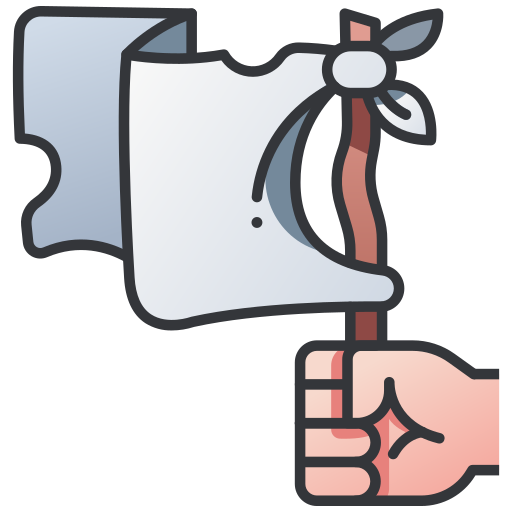

Mapa Sphere
Mostrar tudo
Esconder tudo
Pesquisar
Clique no mapa para ver as coordenadas
Castelos
▾
Castelos 15
Castelos 30
Castelos 45
Teleporte de Runas
▾
Northern Road of Hyperion
North-western end of Hyperion
Sheepston-Sunpool Road
Field by the Sheepstone-Sunpool Road
North-east of Hyperion
Umrad Forest
Silver Forest
Sheepston-Torweal Road
Mountains between Sheepstone and Bangville
Lake Temer
Sheepston-Sunpool Road near Lake Vortex
Sunpool-Bangville Road near Lake Vortex
Heber Island (Lake Temer)
Foros Island (Lake Vortex)
Mounth of the Nerey
Deyros Island (Lake Vortex)
Eastern Forest
Mounth of Dioma
Horton Forest
Mountains near the Sunpool-Torweal Road
Island Patros (Lake Satin)
South-Eastern mountains pocket
North of Coyton Forest
South-western end of Hyperion
Tantal Bridge
Obol
Profissões
▾
Arquimago
Armeiro
Assassino
Bárbaro

Bandoleiro
Caçador
Cruzado
Druida
Encantador
Ferreiro
Inquisidor
Ladrão
Mestre do Aço
Necromante
Comerciantes
▾
Armas ▾
I a V
VI a IX
X a XII
Armaduras ▾
I a V
VI a IX
X a XII
Anéis ▾
31 ~ 44
41 - 52
31 ~ 43
Pós ▾
I a V
VII a IX
IX a XI
XI a XII
Crateras